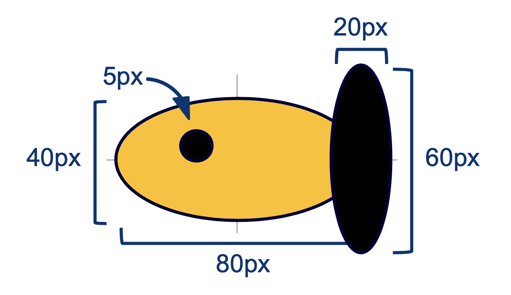

Lecture Notes 28: Planning a simple animation with graphics.py
Example Objective:
The following is what we wanna build:

(Note: the awesome wavering pixels in the background is an artifact of the gif-making)
The next steps are:
- Design the structure so we achieve the following objective
- We may have several types of fish
- They may flip direction
- They move on the screen
- They move in a different direction if certain conditions are met (reach the wall)
- Write the Fish Class
- Create and Draw several fish and move them in the screen
- Add a background
- Add bouncing logic
Task 1: Design the Structure
First discuss the components using drawings and geometry as well as the Coding Structure that we'll use.
Open the Aquarium Replit to develop the project it by bit.
Things to note:
- initializing, constructing, and drawing the fish should be distinct things
- We want to use inheritance (from a base fish) to make special fish
Drawing the Background
Check the img folder and read the graphics pdf documentation to search how to add the image "aquarium_bg.gif" as a background.
Showing our results in the main
add the necessary code in the appropriate section of the main to show the background (and debug your issues)
The base fish class
The following is the geometry and coordinate system of the base fish:

We will build the fish class with the following idea:
We will construct it in two steps:
- initialize the fish given an input Graphics window win and a 2D Point position
- construct the fish using the 2D Point position
This will be important when we move on to animation because having a fish object and constructing it are two different things, the former saves space in memory for the information while the latter defines the actual look of the fish, which will vary depending on the animation state (in particular.... is the fish facing left or right!)
- __init__ will define the basic variables that must be present in a fish (like a body, a tail, an eye, the values for red, green and blue and a direction starting value) and some of the values they must contain (like the red, green, and blue values of the fish's color)
- Then, __init__ calls the method construct which will take care of actually making the body parts and placing them in the fish's coordinate system
The __init__ method
Make sure to add variables for:
- direction (either -1 or 1 ... start it at -1 for now)
- red (a random integer in [0,255])
- green (a random integer in [0,255])
- blue (a random integer in [0,255])
- eye (with value None, for now)
- body (with value None, for now)
- tail (with value None, for now)
Then, call the construct method passing the position input parameter as an argument.
The construct method
Make and place the following elements:
- p1 of the body oval wrt the desired position
- p2 of the body oval wrt the desired position
- add an oval using p1, p2
- set the oval body color using the red, green and blue member variables
- repeat the previous steps for the tail (wrt the position)
- repeat the previous steps for the eye (wrt the position
The draw method
This is simple, it draws the body, tail and eye for the current object in the window object
win passed in as a parameter.
Showing our results in the main
Un-comment step 1 in main (only two lines) and debug your issues.
Task 2: Add the fish subclasses (child classes)
For each subclass:
- Call the base fish's constructor first
- change a selection of shape, size, color for the body, eye and tail of the fish
Task 3: Create, draw and move fish from the main
We will need the "aquarium" logic to run in the main while using the created objects.
We should use the graphics' library move method.
Task 4: Add the fish direction and a method to flip it
Parametrized construction (inside make_fish) based on a 2-option direction (1 or -1)
Homework
[Due for everyone]
Aquarium: It is Due by Friday next week, but we'll work on it together during this week.
Also, remember that the Prototype I is due tomorrow (extended to Monday 04/11)
For Project Prototype I you will submit your
minimum viable product. This should include the core functionality to demonstrate the purpose of your project.
Your core functionality should include:
Project's Niche:
- Why is this product useful/needed?
- What would be an ideal long-term goal ( what would it look like for this project to be a success)
- What is your success criteria: what are the minimum things that it should achieve so you say "I did it!"
User's Journey:
- What should it look like/feel like to use your product
- Are there multiple outcomes? What are they?
- Here, a "user-experience" flow diagram would be VERY useful
- Here, a series of mock-ups would be very useful (think of these as intermediate screens encountered by the user as they use your app)
Features and Modules:
- What are the different features/parts/modules in your product
- Which ones are crucial (mission critical) and which ones are perks (good to have but optional)
- Roadmap of what needs to be built, in what order, and by whom
[Optional]